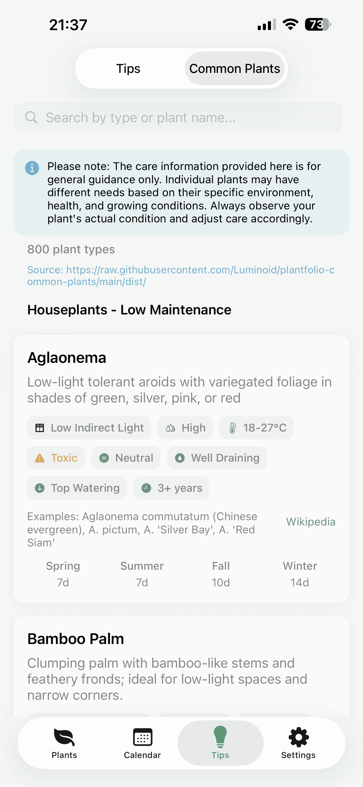

← 返回 Plantfolio 植物志


如何添加自定义常见植物数据源
你可以从自定义 HTTPS 链接下载植物建议数据。使用文件夹链接（以 / 结尾）可提供多语言文件，或使用直接 JSON 链接提供单一语言文件。切换语言时的优先级：当前语言的文件夹文件 → 直接 JSON → 内置数据。出于安全考虑，本地地址和私有 IP 会被拒绝。下方也提供默认链接，点选即可复制。
默认数据源
文件夹链接（推荐，会随应用语言自动切换）
https://raw.githubusercontent.com/Luminoid/plantfolio-common-plants/main/dist/
直接 JSON（单一语言）
EN https://raw.githubusercontent.com/Luminoid/plantfolio-common-plants/main/dist/common_plants.json
ES https://raw.githubusercontent.com/Luminoid/plantfolio-common-plants/main/dist/common_plants_es.json
ZH https://raw.githubusercontent.com/Luminoid/plantfolio-common-plants/main/dist/common_plants_zh-Hans.json
步骤 1. 打开设置
打开 Plantfolio，进入 设置，滚动到 自定义常见植物数据源 区域。
步骤 2. 选择数据源
选择你喜欢的自定义植物数据源，或使用我们的默认数据源。点击 说明图标 查看并复制默认链接。
步骤 3. 输入链接
点击链接输入框，粘贴你的数据源链接。可使用：
- 文件夹链接（以
/结尾）— 用于多语言 JSON 文件（如common_plants.json、common_plants_zh-Hans.json） - 直接 JSON 链接 — 用于单一语言文件
步骤 4. 下载
点击 立即下载 获取并安装植物数据。应用会先验证数据源再应用。
步骤 5. 使用植物数据
新的常见植物数据已就绪。在添加或编辑植物时，前往 常见植物 页面即可看到更新后的建议。
提示： 默认链接可在应用内直接复制。在 设置 → 自定义常见植物数据源 中点击说明图标即可查看。